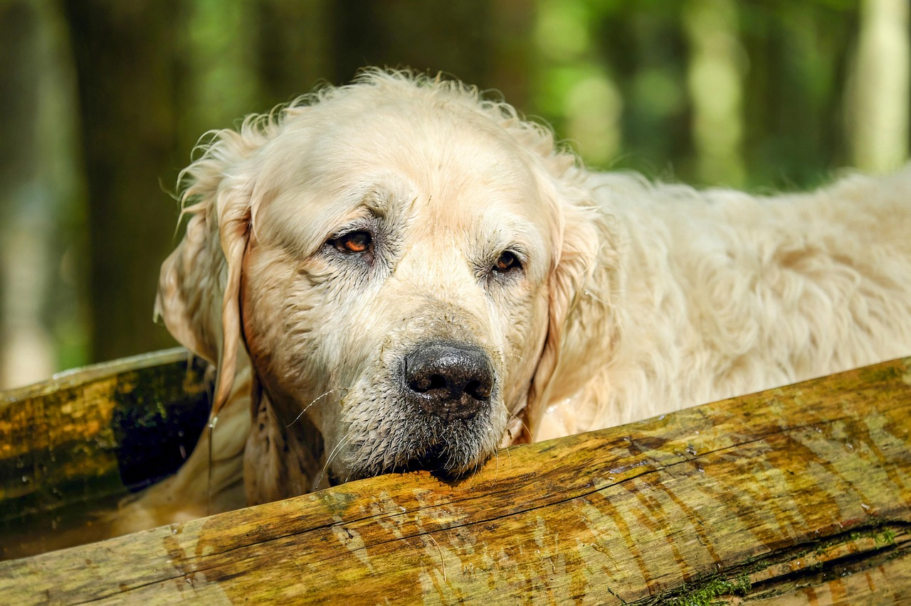

一、品种易感疾病
高发
髋关节发育不良（CHD）
症状：走路跛行、起身困难、兔子跳、运动减少
预防：选择正规犬舍购买有CHD认证的幼犬；2岁前避免剧烈跳跃；控制体重；补充葡萄糖胺、软骨素。
高发
皮肤过敏与皮肤病
症状：频繁抓挠、皮肤红肿、脱毛、皮屑增多、异味
预防：定期驱虫；保持被毛干燥清洁；排查食物过敏原；洗澡后彻底吹干。
高发
肿瘤（癌症）
症状：体表肿块、体重骤降、食欲减退、精神萎靡
预防：7岁后定期肿瘤筛查；避免接触致癌物质；科学饮食；绝育可降低部分肿瘤风险。
常见
心脏病
症状：运动不耐受、咳嗽、呼吸急促、牙龈发紫
预防：年度心脏超声检查；控制体重；避免过度兴奋和剧烈运动；低盐饮食。
常见
眼部疾病
症状：白内障、渐进性视网膜萎缩、眼睑内翻
预防：定期眼科检查；注意眼部清洁；避免眼睛外伤；发现异常及时就医。
常见
胃扭转（GDV）
症状：进食后突然腹胀、干呕、烦躁不安、流口水
预防：饭后1小时内不剧烈运动；分多次少量喂食；使用慢食碗。
二、疫苗接种计划
6-8周龄
第一针
- 二联/四联疫苗
- 体内外驱虫
10-12周龄
第二针
- 四联/六联疫苗
- 体内外驱虫
14-16周龄
第三针
- 四联/六联疫苗
- 狂犬疫苗（满3月龄）
每年
年度加强
- 联合疫苗
- 狂犬疫苗
- 定期驱虫
⚠️ 注意事项：
- 接种前确保狗狗身体健康，无腹泻、发烧等症状
- 接种后观察30分钟再离开医院，防止过敏反应
- 一周内不洗澡、不外出接触陌生环境
- 建议每年做一次抗体检测，根据结果决定是否需要补打疫苗
三、定期驱虫方案
🪱 体内驱虫
幼犬：每2周一次，直至6月龄
6月-1岁：每1-2个月一次
成犬：每3个月一次
驱虫药种类：拜宠清、犬心保等，按体重服用
🦟 体外驱虫
夏季（5-10月）：每月一次
冬季（11-4月）：每1-2个月一次
经常外出：建议全年每月一次
驱虫药种类：福来恩、大宠爱、尼可信等
四、年度体检项目
基础检查（必做）
- 体温、体重、体况评分
- 眼、耳、口腔、皮肤检查
- 心脏听诊、肺部听诊
- 腹部触诊、淋巴结触诊
- 四肢关节、步态评估
实验室检查
- 血常规（CBC）
- 血液生化（肝肾功能、血糖、血脂）
- 尿常规
- 粪便常规（寄生虫检查）
- 心脏彩超（5岁以上建议）
- 腹部B超（7岁以上建议）
- 髋关节/肘关节X光（2岁时评估）
五、日常健康观察
食欲
正常进食，对食物保持热情
饮水
饮水量稳定，不暴饮暴喝
排便
成型软硬适中，无黏液/血便
排尿
颜色淡黄透明，无排尿困难
精神
活泼好动，对主人热情回应
体温
正常范围38-39.2℃（直肠温）
❤️ 健康管理总原则
定期体检重于紧急治疗，预防胜于补救。建立完整的健康档案，记录每次疫苗、驱虫、体检和生病情况。多学习养宠知识，细心观察爱犬的日常状态，及时发现异常，才能最大程度保障金毛犬的健康与幸福。